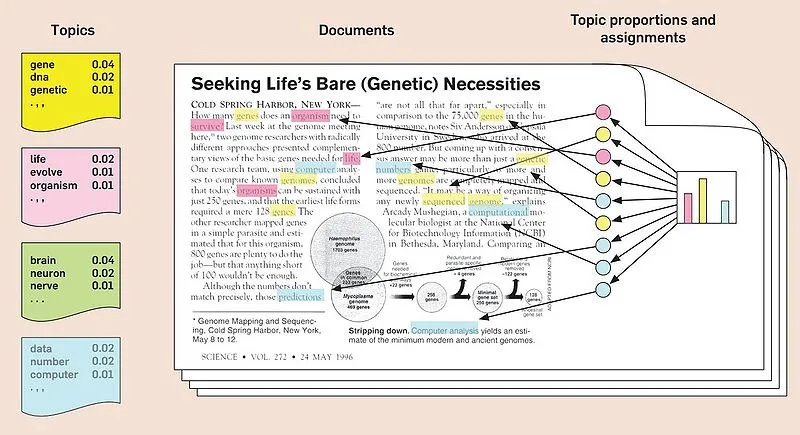
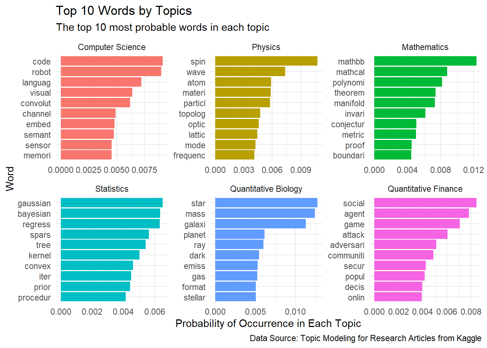
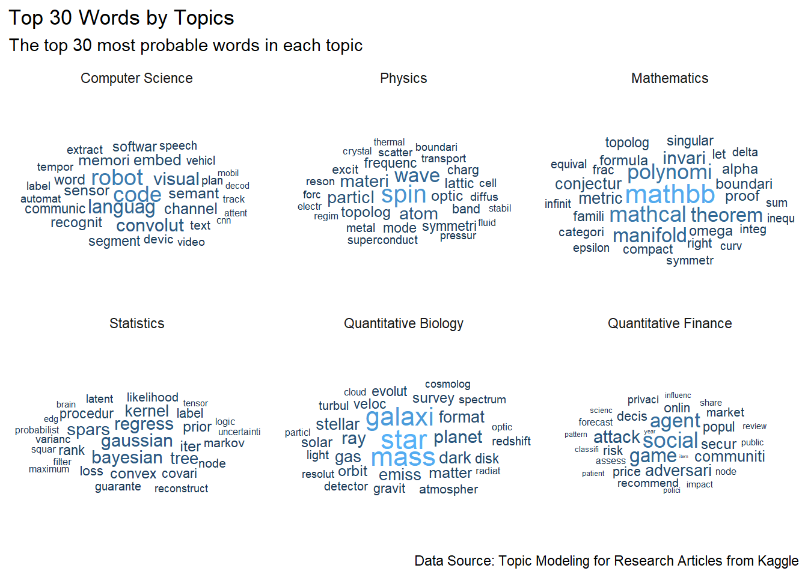
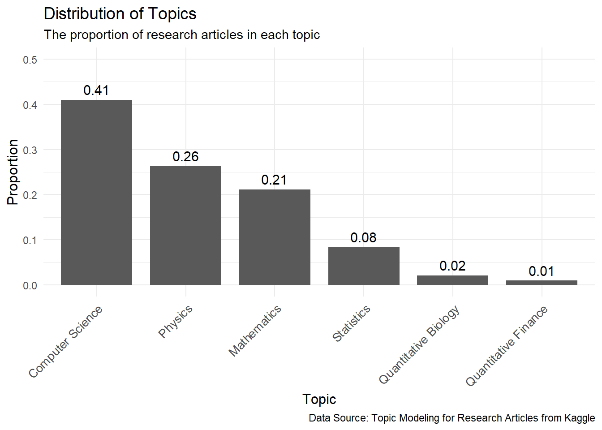
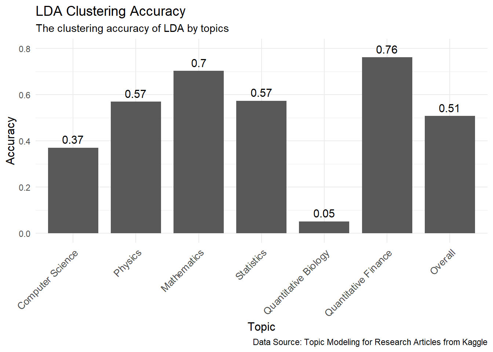

Show the code
library(tidyr)
library(dplyr)
library(tibble)
library(tidytext)
library(ggplot2)
library(ggwordcloud)
library(topicmodels)
library(quanteda)In natural language processing, topic models detect abstract ‘topics’ underlying a collection of documents. As research papers increase in number and accessibility, the problem of article categorization has become a hot topic. Moreover, different categories can overlap with each other, posing new problems of characterizing documents as a mixture of topics.
In this analysis, I would like to explore the ability of latent Dirichlet allocation (LDA), one of the most popular topic models, in detecting the underlying topics of research papers (Blei, Ng, and Jordan 2003). Unlike hard clustering algorithms, LDA treats each article as a mixture of multiple topics and aims to recover the mixture proportion. How accurate can the papers be clustered? What are the key features distinguishing different clusters?
A hard clustering algorithm assigns every item to one and only one cluster. LDA is a type of soft clustering, where every item can belong to multiple clusters.
The intended audience are researchers who want to find an efficient way to find papers of interests. Moreover, the results can give insights on the strengths and weaknesses of LDA for people who want to use the model in other settings.
The Kaggle dataset Topic Modeling for Research Articles contains the title and abstract of 20972 scientific papers published between 2017 and 2020. They are from 6 topics: Computer Science, Physics, Mathematics, Statistics, Quantitative Biology, and Quantitative Finance. The data dictionary is recreated with information from the Kaggle website.
| Field Name | Data Type | Description |
|---|---|---|
| ID | int | Unique ID |
| TITLE | chr | Title of the Paper |
| ABSTRACT | chr | Abstract Summary of the Paper |
| Computer.Science | int | 0/1, Whether Under Computer Science Topic |
| Physics | int | 0/1, Whether Under Physics Topic |
| Mathematics | int | 0/1, Whether Under Mathematics Topic |
| Statistics | int | 0/1, Whether Under Statistics Topic |
| Quantitative.Biology | int | 0/1, Whether Under Quantitative Biology Topic |
| Quantitative.Finance | int | 0/1, Whether Under Quantitative Finance Topic |
A corpus is a collection of documents, and each document is a collection of words. In our dataset, a document consists of the title and abstract of one research paper, whereas the collection of titles and abstracts of all research papers makes up the corpus.
Below is the content of an example document. The example will be used throughout the analysis.
# load data
raw_data = tibble(read.csv("data/dataset.csv"))
# an example document (title)
cat(sprintf(raw_data[10,]$TITLE))$\mathcal{R}_{0}$ fails to predict the outbreak potential in the presence of natural-boosting immunity Time varying susceptibility of host at individual level due to waning and
boosting immunity is known to induce rich long-term behavior of disease
transmission dynamics. Meanwhile, the impact of the time varying heterogeneity
of host susceptibility on the shot-term behavior of epidemics is not
well-studied, even though the large amount of the available epidemiological
data are the short-term epidemics. Here we constructed a parsimonious
mathematical model describing the short-term transmission dynamics taking into
account natural-boosting immunity by reinfection, and obtained the explicit
solution for our model. We found that our system show "the delayed epidemic",
the epidemic takes off after negative slope of the epidemic curve at the
initial phase of epidemic, in addition to the common classification in the
standard SIR model, i.e., "no epidemic" as $\mathcal{R}_{0}\leq1$ or normal
epidemic as $\mathcal{R}_{0}>1$. Employing the explicit solution we derived the
condition for each classification.LDA works with the bag of words (BoW) representation of documents. That is, a document is viewed as an unordered collection of words coming from a vocabulary shared across all documents. Under this model, each document can be represented as a vector of word counts for each word in the vocabulary, and the corpus can be represented as a document-term matrix where each row is the BoW representation of one document. To capture the distinct usage of words in different topics, an ideal vocabulary needs to contain words specific to topics, such as ‘code’ and ‘magnetic’, and avoid words common to all documents, such as ‘the’ and ‘a’.
The goal of preprocessing is to construct a vocabulary and create the corresponding document-term matrix for the corpus.
First, I deleted an incomplete document that contains only a few words common to many documents. Such a document is not informative about the topics it belong to and can pose problems in model training.
Are theoretical results 'Results'? Yes.By convention, all data entries should be used in the analysis because the use of partial data might introduce bias in the analysis. Any deletion of data entries needs to be well-justified.
Second, I constructed the documents by combining the title and abstract for each paper. The topic labels are also adjusted to fit into one column.
raw_data = raw_data %>%
unite(col="text", TITLE:ABSTRACT, sep=" ") %>% # combine title and abstract
mutate(label=case_when( # adjust topics labels
Computer.Science==1 ~ 1,
Physics == 1 ~ 2,
Mathematics == 1 ~ 3,
Statistics == 1 ~ 4,
Quantitative.Biology == 1 ~ 5,
Quantitative.Finance == 1 ~ 6
)) %>%
select(ID, text, label) %>% # retain only necessary information
arrange(ID)Third, the texts are transformed to construct the document-term matrix. To be specific, new line characters, punctuations, non-word symbols, numbers, urls, separators, and words of length 1 and 2 are removed. Words are reduced to their stem form. For example, ‘received’, ‘receives’, and ‘receiving’ are all replaced by the root ‘receiv’. Moreover, common words that appear in more than 4% of the documents are removed. The remaining words make up the vocabulary, and the corresponding document-term matrix is constructed.
Both stemming and lemmatization aim to reduce the inflected words into their base form, which can be viewed as a normalization of the words. A stemmer usually truncates the last few letters of a word based on simple rules. It runs faster but may generate a non-word pseudo stem. On the other hand, a lemmatizer considers both the morphology and the syntactic context of a word. Although it runs much slower and may deals with fewer cases, the result is more meaningful and human-friendly. For example, a lemmatizer can reduce ‘better’ to ‘good’ but a stemmer cannot.
# remove new line characters
raw_data$text = gsub(pattern = "\n", replacement = " ", x = raw_data$text)
# remove words that have length 1 or 2
raw_data$text = gsub(pattern='\\b\\w{1,2}\\b', '', x = raw_data$text)
tokens <- raw_data$text %>%
tokens(what = "word",
remove_punct = TRUE,
remove_symbols = TRUE,
remove_numbers = TRUE,
remove_url = TRUE,
remove_separators = TRUE,
split_hyphens= TRUE) %>%
tokens_tolower() %>%
tokens_remove(stopwords("english")) %>%
tokens_wordstem()
dfm.final <- dfm_trim(dfm(tokens),
max_docfreq = 0.04,
docfreq_type = "prop",
verbose = FALSE)
# the final document-term matrix
dtm = convert(dfm.final, to = "tm") [1] "mathcal" "fail" "predict" "outbreak" "potenti"
[6] "presenc" "natur" "boost" "immun" "time"
[11] "vari" "suscept" "host" "individu" "level"
[16] "due" "wane" "boost" "immun" "known"
[21] "induc" "rich" "long" "term" "behavior"
[26] "diseas" "transmiss" "dynam" "meanwhil" "impact"
[31] "time" "vari" "heterogen" "host" "suscept"
[36] "shot" "term" "behavior" "epidem" "well"
[41] "studi" "even" "though" "larg" "amount"
[46] "avail" "epidemiolog" "data" "short" "term"
[51] "epidem" "construct" "parsimoni" "mathemat" "model"
[56] "describ" "short" "term" "transmiss" "dynam"
[61] "take" "account" "natur" "boost" "immun"
[66] "reinfect" "obtain" "explicit" "solut" "model"
[71] "found" "system" "show" "delay" "epidem"
[76] "epidem" "take" "negat" "slope" "epidem"
[81] "curv" "initi" "phase" "epidem" "addit"
[86] "common" "classif" "standard" "sir" "model"
[91] "epidem" "mathcal" "leq1" "normal" "epidem"
[96] "mathcal" "employ" "explicit" "solut" "deriv"
[101] "condit" "classif" Latent Dirichlet allocation (LDA) is one of the most popular models in topic modeling (Blei, Ng, and Jordan 2003). It defines each topic as a multinomial distribution over all words in the vocabulary. Words that are representative of a topic are assigned with a higher probability to occur. Moreover, LDA assumes that every word in a document belongs to a specific topic. Since a document is a collection of words, every document can then be viewed as a mixture of different topics. The goal of the model is to discover the word distribution for each topic as well as the mixture proportion for each document. A figurative explanation of LDA from the article Topic modelling with Latent Dirichlet Allocation (LDA) in Pyspark is shown below.

The LDA function from the topicmodels package is used (Grün and Hornik 2023). Since our dataset contains research papers from 6 fields, a LDA model with 6 clusters are fitted. The cluster labels returned by LDA are matched with the topic labels defined in the dataset according to the confusion matrix.
# fit the model
# lda_model = LDA(dtm, k=6, method="VEM", control=list(seed=4))
# save the model to save running time
# saveRDS(object=lda_model, file="data/lda_model.rds")
lda_model = readRDS("data/lda_model.rds")
topics.prob = posterior(lda_model, dtm)$topics
pred.label = apply(topics.prob, 1, which.max)
true.label = raw_data$label pred.label
true.label 1 2 3 4 5 6
1 3185 661 58 169 2500 2021
2 101 211 1657 3141 227 184
3 39 3117 26 240 858 156
4 221 42 28 30 1011 433
5 55 6 23 107 120 135
6 3 11 0 3 33 159# match the predicted label to the topic label according to the confusion matrix
pred.df = tibble(label=true.label, final.pred=0, raw.pred=pred.label) %>%
mutate(final.pred=case_when (
raw.pred == 1 ~ 1,
raw.pred == 4 ~ 2,
raw.pred == 2 ~ 3,
raw.pred == 5 ~ 4,
raw.pred == 3 ~ 5,
raw.pred == 6 ~ 6
))
# combine the predicted label and the true label
result_df = raw_data
result_df$pred = pred.df$final.predLet’s inspect what are the key words selected for each topic. The following two figures show that LDA does a good job in recognizing most of the topics, except for quantitative biology. For example, the word that occurs with the highest probability for computer science is code. Moreover, other probable words robot, language, and visual may represents subfields robotics, NLP, and computer vision. Similar trends hold for other topics. However, the words selected for quantitative biology is completely unrelated to the topic. LDA seems to separate physics into general physics and astronomy, and the label that is matched to quantitative biology actually corresponds to astronomy.
plot.df= pred.df %>%
group_by(label) %>%
summarize(accuracy=mean(final.pred==label), count=n(), prop = count/nrow(raw_data))
plot.df = plot.df %>%
add_row(tibble_row(label=7,
accuracy=sum(plot.df$accuracy*plot.df$prop),
count=sum(plot.df$count),
prop=1)
) %>%
arrange(label)
plot.df$label = as.factor(plot.df$label)
plot.df$topic = c("Computer Science", "Physics", "Mathematics", "Statistics",
"Quantitative Biology", "Quantitative Finance", "Overall")
top_terms = tidy(lda_model, matrix = "beta") %>%
group_by(topic) %>%
slice_max(beta, n = 10) %>% # get the top 10 words within each topic
ungroup() %>%
mutate(topic.final=case_when ( # match the predicted label with the true label
topic == 1 ~ 1,
topic == 4 ~ 2,
topic == 2 ~ 3,
topic == 5 ~ 4,
topic == 3 ~ 5,
topic == 6 ~ 6
)) %>%
select(-topic) %>%
rename(topic=topic.final) %>%
arrange(topic, -beta)
ggplot(data=top_terms, aes(x=beta, y=reorder_within(x=term, by=beta, within=topic),
fill = factor(topic))) +
geom_col(show.legend = FALSE) +
facet_wrap(~topic, scales="free",
labeller=labeller(topic=c("1"=plot.df$topic[1],
"2"=plot.df$topic[2],
"3"=plot.df$topic[3],
"4"=plot.df$topic[4],
"5"=plot.df$topic[5],
"6"=plot.df$topic[6]))) +
scale_y_reordered() +
labs(title="Top 10 Words by Topics",
subtitle="The top 10 most probable words in each topic",
caption="Data Source: Topic Modeling for Research Articles from Kaggle",
x="Probability of Occurrence in Each Topic",
y="Word") +
theme(strip.text = element_text(size=12),
plot.title = element_text(size=14)) +
theme_minimal()
top_terms = tidy(lda_model, matrix = "beta") %>%
group_by(topic) %>%
slice_max(beta, n = 30) %>% # get the top 10 words within each topic
ungroup() %>%
mutate(topic.final=case_when ( # match the predicted label with the true label
topic == 1 ~ 1,
topic == 4 ~ 2,
topic == 2 ~ 3,
topic == 5 ~ 4,
topic == 3 ~ 5,
topic == 6 ~ 6
)) %>%
select(-topic) %>%
rename(topic=topic.final) %>%
arrange(topic, -beta)
ggplot(top_terms, aes(label=term, size=beta, color=beta)) +
geom_text_wordcloud() +
facet_wrap(~topic, scales="free",
labeller=labeller(topic=c("1"=plot.df$topic[1],
"2"=plot.df$topic[2],
"3"=plot.df$topic[3],
"4"=plot.df$topic[4],
"5"=plot.df$topic[5],
"6"=plot.df$topic[6]))) +
labs(title="Top 30 Words by Topics",
subtitle="The top 30 most probable words in each topic",
caption="Data Source: Topic Modeling for Research Articles from Kaggle") +
theme(strip.text = element_text(size=12),
plot.title = element_text(size=14)) +
theme_minimal()
Now, let’s see how accurate LDA does in categorizing research papers. LDA assigns each paper with a probability vector representing the proportion of each topic in the paper. For example, a paper assigned with [0.1, 0.1, 0.2, 0.05, 0.05, 0.3] is a mixture of 10% topic 1, 10% topic 2, 20% topic 3, 5% topic 4, 5% topic 5, and 30% topic 6. To ease the comparison, assume that each paper belongs to the topic that it has the highest proportion in. In this example, the paper will be assigned to topic 6. Following this scheme, LDA achieves an overall accuracy of 51%.
The overall performance differs from the model performance within each cluster. Figure 4 shows that there is a high variation among accuracy in different topics. Though it may be possible that the imbalanced labels shown in Figure 3 contribute to this, we can see that the effect of sample size on accuracy is not monotone. Several reasons might explain this. One is that the number of categories detected by LDA is different from our specified cluster number. The previous section shows that LDA separates the general physics and astronomy into two categories. Since both of them may be easier to detect than quantitative biology, LDA completely ignores the category of quantitative biology and results in a low accuracy. A larger input value for the number of clusters is needed for LDA. The other reason is that topics overlap with each other. Papers in an interdisciplinary field may be categorized as a even mixture of many topics. Thus, it is may not be reasonable to use a single topic to characterize them. Nevertheless, we see the strength of LDA that even categories with a small sample size can have a high clustering accuracy, as long as the top words in that category is correctly identified.
ggplot(data=plot.df[-nrow(plot.df),], aes(x=label, y=prop)) +
geom_bar(stat="identity", width=0.8) +
geom_text(aes(label = round(prop, 2)), vjust = -0.5, size = 4) +
scale_x_discrete(labels = plot.df$topic) +
ylim(0, 0.5) +
labs(title="Distribution of Topics",
subtitle="The proportion of research articles in each topic",
caption="Data Source: Topic Modeling for Research Articles from Kaggle",
x="Topic",
y="Proportion") +
theme_minimal() +
theme(axis.text.x = element_text(angle = 45, hjust = 1, size=10),
axis.title.x = element_text(size = 12),
axis.title.y = element_text(size = 12),
plot.title = element_text(size=14))
ggplot(data=plot.df, aes(x=label, y=accuracy)) +
geom_bar(stat="identity", width=0.8) +
geom_text(aes(label = round(accuracy, 2)), vjust = -0.5, size = 4) +
scale_x_discrete(labels = plot.df$topic) +
ylim(0, 0.8) +
labs(title="LDA Clustering Accuracy",
subtitle="The clustering accuracy of LDA by topics",
caption="Data Source: Topic Modeling for Research Articles from Kaggle",
x="Topic",
y="Accuracy") +
theme_minimal() +
theme(axis.text.x = element_text(angle = 45, hjust = 1, size=10),
axis.title.x = element_text(size = 12),
axis.title.y = element_text(size = 12),
plot.title = element_text(size=14))
In the example analysis, we use latent Dirichlet allocation to categorize research papers from 6 related fields using their title and abstract. The model achieves an overall accuracy 0f 51% and does a good job in categorizing all but quantitative biology papers. This is mostly because LDA separates the physics category into general physics and astronomy, so it completely ignores the category of quantitative biology. The underlying reason is that the number of clusters is a user-specified parameter that might not match with the number of clusters possibly identified by LDA. On the other hand, when the top words in a category can be correctly identified, even the category quantitative finance with the smallest sample size can achieve a high accuracy. A future step is to try fitting hierarchical Dirichlet process (HDP), an extension of LDA that allows the algorithm itself to detect the number of clusters, which might yield a better result (Yee Whye Teh and Blei 2006).
dplyr package: mutate, select, case_when, rename, slice_max, group_by, ungroup, arrange, summarize, add_rowtidyr package: uniteggplot2 package: geom_bar, geom_col, geom_text, facet_wrapggwordcloud package: geom_text_wordcloud